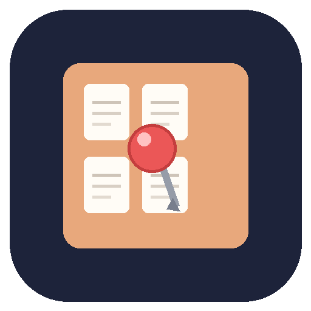

Tackboard
A local publishing tool for one Pinterest account
Tackboard is a command-line tool that runs on the operator's own computer. It collects long-tail keywords, writes Pin titles and descriptions, draws 1000×1500 Pin images, checks each Pin against Pinterest's field limits, and publishes the finished Pins through the official Pinterest API v5. There is no server and no third-party backend: every step runs locally, and the only credential it holds is an OAuth access token that the account owner grants on Pinterest's own authorization page.
Tackboard asks for a Pinterest password exactly never, and it does not use browser automation, scraping, or Pinterest's internal endpoints. Everything it publishes goes through the documented public API.
What it does
| Stage | What happens |
|---|---|
| Research | Collects keyword candidates from public search-engine autocomplete endpoints (Google, Bing, DuckDuckGo) and scores them. Results are cached on disk. |
| Plan | Turns keywords into a list of Pins: title, description, alt text, board, and destination link. Duplicate titles, descriptions and links are rejected here. |
| Render | Draws the Pin image locally at 1000×1500 (2:3), keeping all text inside Pinterest's safe zone, and optionally composites a product photo. |
| Check & publish | Runs a pre-publish check for title, description, alt-text and textbox length, required
disclosures, and duplicate content, then creates the Pins with
POST /v5/pins. |
Publishing can be split from preparation. prepare produces the day's plan and
images and stops; the operator reviews them and removes anything unwanted; only then does the
scheduled run publish the reviewed plan. The operator therefore chooses each Pin that goes out.
Pinterest API scopes, and why each is needed
boards:read— to list the account's boards so a Pin can be filed on the right one.boards:write— to create a board when the right one does not exist yet.pins:read— to confirm that a Pin was created, and to avoid publishing the same Pin twice.pins:write— to create the Pin itself, which is the whole purpose of the tool.user_accounts:read— to read the account's own profile so the operator can confirm the connection is healthy before a publishing run.
No advertising, catalog, billing, business-access or secret-board scopes are requested. A
separate secret preset exists in the tool for operators who genuinely need secret
boards, but it is not used by default and is not requested during this app's authorization.
How data is handled
Nothing is uploaded to a server owned by the operator or by anyone else. The OAuth token, the keyword cache, the plan files, and the generated images stay in the tool's own folder on the operator's machine. Pinterest API responses are used in memory for the current run and are not kept as a separate store; the one exception is the numeric ID of a Pin the tool created itself, which is kept only to keep later runs from publishing a duplicate and to let the tool find its own Pins again.
The tool writes an affiliate disclosure sentence into every Pin description, marks
AI-modified images with Pinterest's ai_disclosures field, and refuses to publish a
Pin whose disclosure is missing.
Full detail is in the privacy policy.
How to get access
Tackboard is a single-operator tool: it is connected to one Pinterest account, belonging to the person who runs it, and it is not offered as a service to other Pinterest users. It is not distributed on an app store and it does not accept sign-ups.
Contact
Questions about the tool, the scopes, or the data it holds can be sent to seiseimelon@gmail.com.